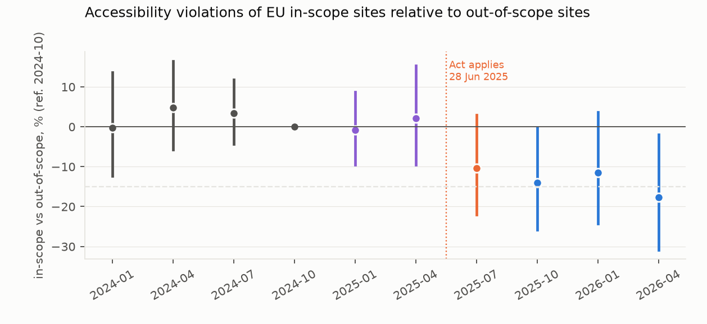
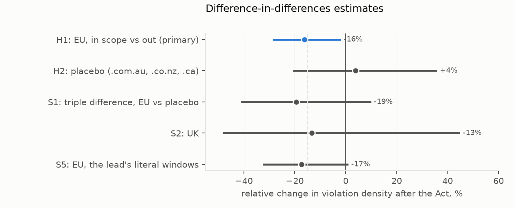

Verdict: Supported under the preregistered specification, with the size uncertain. Automatically detectable accessibility failures on in-scope EU homepages fell relative to out-of-scope ones once the Act applied. The fall is concentrated among a minority of sites that cleared their failures entirely, its size runs from about −11% to −16% depending on how it is measured, and the placebo cannot rule out a global trend. The in-scope group is nine-tenths online shops, so this is in practice an e-commerce result.
- H1 (the EU in-scope relative change is −15% or larger): Supported, narrowly.
- Under the preregistered model the change is −16.2% (95% CI −28.2% to −2.3%): 1,010 sites, 222 of them in scope, 6,591 snapshots. It clears the −15% bar, and the interval excludes zero.
- The event study has the shape the Act predicts. Pre-period differences are close to zero (−0.2%, +4.8%, +3.4% against 2024-10), the anticipation quarters flat (−0.8%, +2.2%), and the gap opens at the transition quarter (−10%) and stays open (−14%, −11%, −18%).
- The −15% bar is not robust. Measured as a ratio of mean densities the change is −11%; dropping the sites that ever reached zero failures gives −11.9%, and counting failures without normalising by page size −13.5%, with intervals that include zero. Those sites' pages are genuine — the review checked that they serve full content — so the fall is real but carried by the sites that fixed everything, not spread evenly.
- H2 (the placebo contrast changes by less than 5%): Inconclusive, and untestable as designed. The same contrast on .com.au, .co.nz and .ca sites gives +3.8% (−20.4% to +35.5%). Confirming a change within ±5% would have needed a standard error near 0.025; 219 placebo sites delivered 0.136. The minimum detectable change was about −32% or +46%.
- H3 (sites newly installing an overlay improve less): not testable. Only one in-scope EU site newly installed an accessibility overlay, so the preregistered rule's "Refuted" reading rests on one site (D8).
What −16% means. The model is on log(1 + violation nodes per 1,000 elements), so exp(b) − 1 is the relative change in (1 + density), not in density itself. Mean-based translations of the same data give about −11%.
How much the placebo leaves open. The triple difference (EU change minus placebo change) is −19.4%, with an interval (−40.7% to +9.6%) that includes zero. The pattern fits an effect of the Act — no pre-trend, a break at the deadline, nothing similar outside the EU — but the data cannot exclude a worldwide shift in how online shops build pages over the same months.
In plain terms
Since 28 June 2025, EU law has required online shops, banks, transport operators, telecoms and e-book sellers to make their websites and apps accessible to people with disabilities. Other websites, such as news sites or company brochures, are not covered.
We used that boundary as a natural experiment. We took about 1,000 EU websites from the Internet Archive and checked their homepages each quarter from early 2024 to April 2026, counting accessibility errors a computer can detect, such as images without text descriptions and buttons without names.
Covered and uncovered sites tracked each other closely through 2024 and early 2025. After the law applied, the covered sites' errors fell relative to the others, by somewhere between a tenth and a sixth depending on how you count. Most of that came from a smaller group of sites that fixed every detectable error. Almost all the covered sites in the study are online shops.
The same comparison for Australian, New Zealand and Canadian sites showed no clear change, but it was too small to rule one out. So the evidence fits the law making a difference, without proving it: a worldwide change in how online shops build websites could look similar.
These automatic checks catch only some accessibility problems. They miss colour contrast and keyboard use, and say nothing about whether disabled people can actually complete a purchase.
What was asked
The European Accessibility Act (Directive (EU) 2019/882) has applied to private-sector consumer services since
28 June 2025. The study asks three preregistered questions (plan.md):
- H1: among EU sites, did automatically detectable failures fall by at least 15% in covered sectors relative to uncovered ones?
- H2: is the same contrast flat (within ±5%) outside the EU?
- H3: did in-scope sites that newly installed an "overlay" widget improve their underlying markup less?
What was already known
The novelty search (2026-10-17) found vendor scans comparing the EU with the US at one point in time, and single-time-point audits that describe themselves as pre-deadline baselines (Slovenian e-commerce, Austrian video platforms). No before-after design with a comparison group was found.
How it was done
Sites. - Frame. The Tranco list, restricted to 14 EU country-code domains, .co.uk (reported separately), and .com.au, .co.nz and .ca as the placebo. - Sample. A seeded half-sample of 150 sites per jurisdiction (D5): 2,700 sites. 1,741 had enough archived homepages to be eligible: at least 2 of 4 pre-period and 2 of 3 post-period quarters. - Sites without enough captures. 530 sampled domains (20%; 37% of .be) had no usable homepage captures. These are mostly domains whose root URL redirects elsewhere, or DNS and CDN hosts, rather than sites the archive missed, and they include large in-scope firms (allianz.at, jysk.be, cofidis.fr, deliveroo.be). Eleven domains returned archive index errors, and 44 failed fetches were never retried, leaving two sites below eligibility. - Exclusions. Public-sector domains were excluded.
Snapshots. Internet Archive homepage captures closest to the 15th of each target month (D5), fetched one request at a time. Pre: 2024-01, -04, -07, -10. Anticipation: 2025-01, -04. Transition: 2025-07. Post: 2025-10, 2026-01, 2026-04. 16,666 snapshots were measured.
Outcome. log(1 + violation nodes per 1,000 DOM elements), measured by axe-core 4.10.2 under jsdom, with no page
scripts run, on a frozen set of 19 rules a static page can evaluate. Snapshots with fewer than 50 elements or an axe
error were dropped and counted (619 EU, 151 placebo, 43 UK), including 79 timeouts (D7) and 14 selector errors. Drops
rose from 0.8% to 2.6% of in-scope snapshots between the periods. jsdom parses <noscript> content as elements, so
tracking-pixel images inside it count under the image-alt rule in 14–17% of in-scope snapshots.
Sector. Each site's sector comes from fixed multilingual marker rules (cart and checkout terms; online banking; timetables and tickets; tariffs and e-books), read from its earliest pre-period snapshot with at least 300 visible characters (D9). The draft read the earliest snapshot whatever it held, so redirect stubs and empty captures were labelled "out of scope" and some treated firms (drei.at, csob.cz, skyscanner.pt) sat in the control group; those are now "unclassifiable" and excluded. - Labels (all groups): in scope 311, out of scope 1,001, ambiguous 313 and unclassifiable 69 (both excluded), public 47 (excluded). - Composition: 198 of the 222 EU in-scope sites are e-commerce. - Accuracy: a blind check of 120 sites (D6) gave precision 0.87 in scope and 0.88 out of scope; a fresh blind sample of 60 in the review gave 0.77 and 0.83, and the pooled figures are 0.83 and 0.87. Misclassification biases the estimate towards zero.
Model. Site and period fixed effects, with InScope × Post, and standard errors clustered by site. Anticipation and transition quarters are excluded from H1–H3 and kept in the event study. H1 needs the point estimate at −15% or below and the upper bound below 0; H2 needs the interval inside ±5%.
Results
H1: the EU contrast (results/tables/primary.json, results/figures/F1_event_study.png)
| relative change after the Act | 95% CI | sites (in scope) | |
|---|---|---|---|
| H1: EU, corrected sector labels | −16.2% | −28.2% to −2.3% | 1,010 (222) |
| H1: EU, draft labels | −17.3% | −28.8% to −3.9% | 1,023 (230) |
| S5: EU, the lead's literal windows (2024-01/04 vs 2026-01/04) | −17.3% | −32.0% to +0.7% | — |
| S2: UK (partly treated) | −13.3% | −48.0% to +44.5% | 80 (22) |
H1 is Supported: −16.2% is below −15% and the upper bound is below zero. With the minimum detectable effect about 19%, the study was powered close to its threshold.
How robust the size is (post-review, corrected labels; results/tables/sensitivity_post_review.json):
| variant | relative change | 95% CI |
|---|---|---|
| preregistered | −16.2% | −28.2% to −2.3% |
| treated sites limited to e-commerce | −15.6% | −28.4% to −0.5% |
| treated sites limited to banking, transport and telecom (24 sites) | −21.1% | −45.5% to +14.2% |
| drop snapshots with zero violations | −12.3% | −24.2% to +1.5% |
| drop sites that ever reached zero violations | −11.9% | −24.0% to +2.2% |
| violation nodes without normalising by page size | −13.5% | −26.5% to +1.9% |
| ratio of mean densities | −11.0% | — |
The change is concentrated: in the review's analysis of the draft labels, 20 of the in-scope sites carried more than half of the in-scope change, mostly sites that reached zero failures after the Act. The review checked that 19 of those 20 serve full pages after the change, with as many links and as much text as before, so the improvement is real markup change rather than an archive artefact.
The review's independent re-implementation reproduced the preregistered estimate to four decimals, found no joint pre-trend (p = 0.39), an in-time placebo near zero (−2.3%), and a randomisation-inference p of 0.002, all on the draft labels.


H2 and the triple difference (results/figures/F2_estimates.png)
| relative change | 95% CI | |
|---|---|---|
| H2: placebo (.com.au, .co.nz, .ca; 219 sites, 67 in scope) | +3.8% | −20.4% to +35.5% |
| S1: triple difference, EU vs placebo | −19.4% | −40.7% to +9.6% |
- H2 is Inconclusive, and could not have been otherwise. A ±5% band needs a standard error near 0.025; the placebo frame delivered 0.136, and even the full placebo frame would have given about 0.095.
- The triple difference has the expected sign and size, but its interval includes zero.


H3 and overlays
- Overlay scripts (accessiBe, UserWay, EqualWeb and similar) were detected in 188 of 16,666 snapshots. Among EU sites the share went from about 0.5% of snapshots in 2024 to about 1% in 2026, and overlay adoption as an outcome shows no in-scope difference.
- H3 rests on one site. Only one in-scope EU site newly installed an overlay between the periods, so the rule's "Refuted" says nothing beyond that site, and H3 is reported as not testable (D8).
What this does and does not show
- It shows that the EAA boundary separated EU homepages' measured accessibility after June 2025, with flat pre-trends and the change starting at the deadline, under the preregistered specification.
- It does not pin down the size. Estimates run from about −11% to −16% depending on the measure, and the fall is carried by the sites that cleared their failures entirely.
- It does not establish that the Act caused it. The placebo is too small to exclude a worldwide change in how online shops are built; platform-level fixes, such as theme or CMS updates, would reach in-scope sites everywhere.
- It is in practice about online shops. Nine in ten in-scope sites are e-commerce; the other sectors' estimate rests on 24 sites.
- It measures markup, not accessibility. The 19 static rules are a fraction of WCAG; contrast, keyboard, focus and dynamic content are not measured, homepages are not checkouts, and scripts were not run.
- Selection. Archived homepages only; a fifth of sampled domains had no usable captures, mostly redirecting roots. Sector rules misclassify roughly one site in six to eight. Microenterprises, which the Act exempts, cannot be identified. Power is lower than planned (D5).
Process and deviations
- Preregistration. The plan and its code were committed before any archived page was fetched.
- Data source (D1–D5). The study moved from the Wayback Machine to Common Crawl and back because of access blocks, finally using one request at a time on a seeded half-sample, all before any page was fetched.
- D6: the sector check was adjudicated blind by a subagent. The blinding was by instruction — the subagent was told to open only the sample sheet — and the review confirmed from its transcript that it did.
- D7: the metrics run was made timeout-safe and resumable.
- D8 and D9 (after independent review): H3's "not testable" reading recorded as a departure from the preregistered rule; sector labels re-derived from non-stub snapshots with two marker leaks closed, and the model re-run.
- Review. An independent adversarial review (
review/review.md) reproduced the preregistered estimate, verified the axe runs and the design checks, and found the magnitude non-robust and the sector labelling flawed; both are addressed here.
Reproducing it
code/frame.py, code/cdx_v2.py, code/fetch.py, code/sector.py, code/validate_sector.py sample and merge,
code/metrics.py (Node and axe in code/axe_run.js), code/did.py, code/sensitivity_post_review.py,
code/figures.py.
- Results are in
results/tables/:primary.json(corrected labels),primary_v1_draft.json(draft labels),sensitivity_post_review.json,sector_validation.csvand the frame samples.